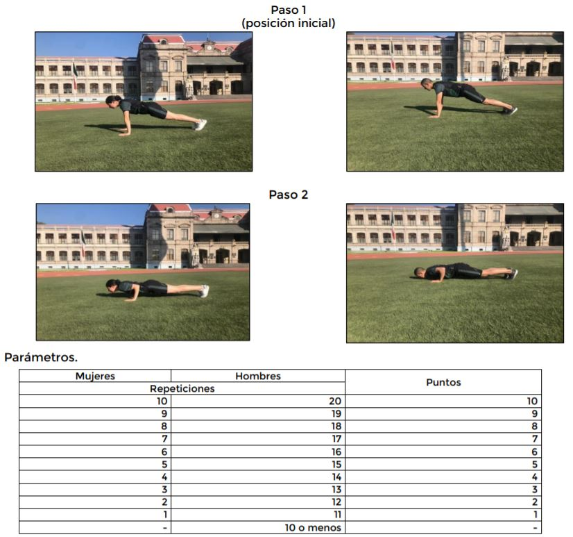
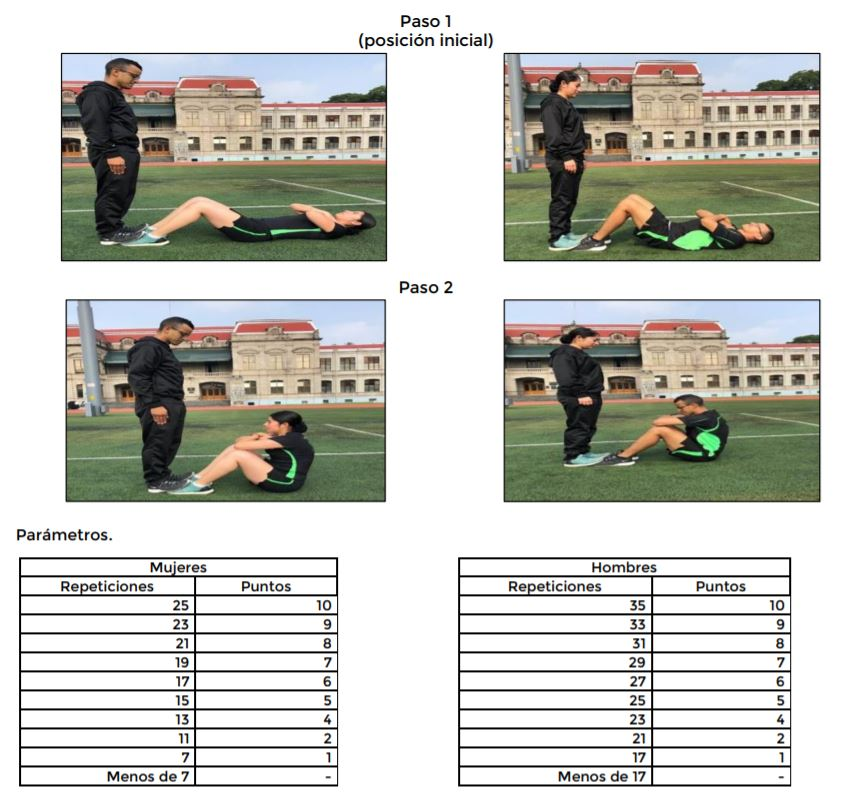
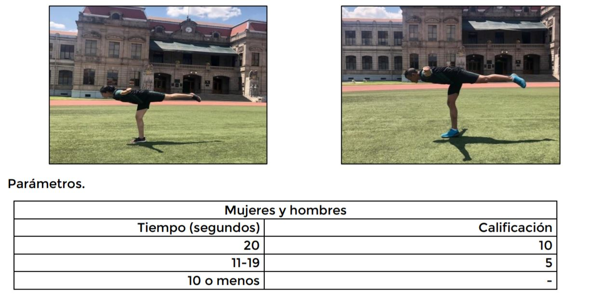
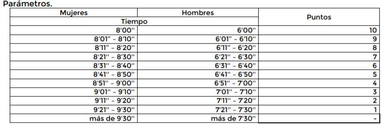
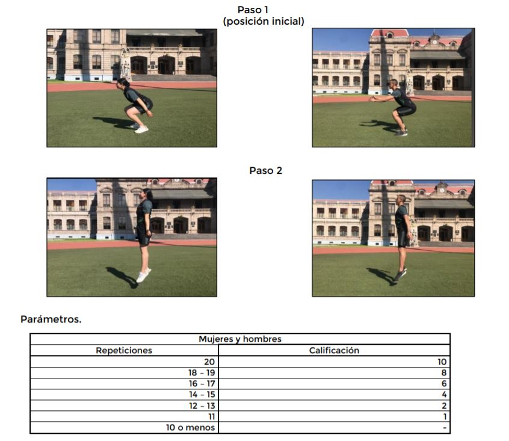
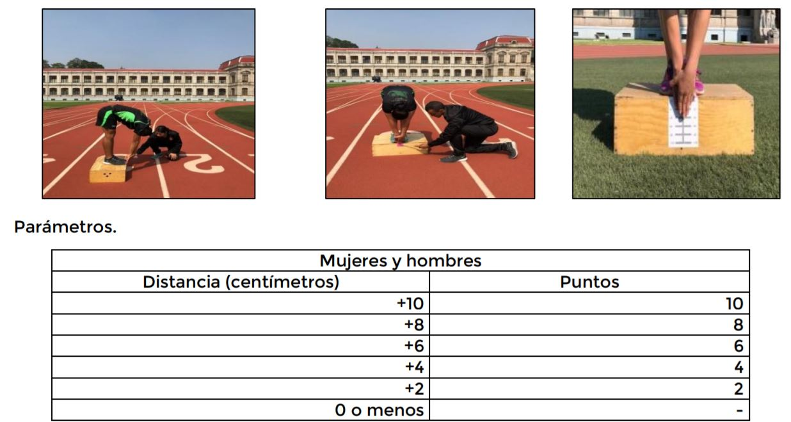
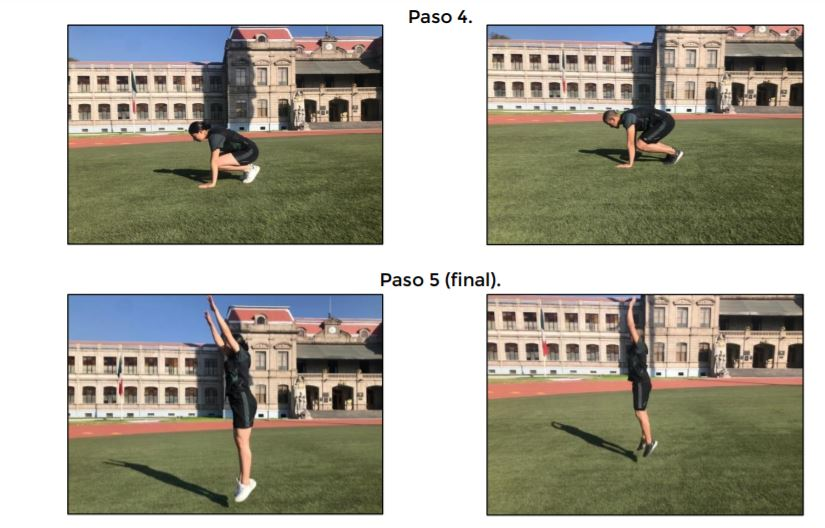
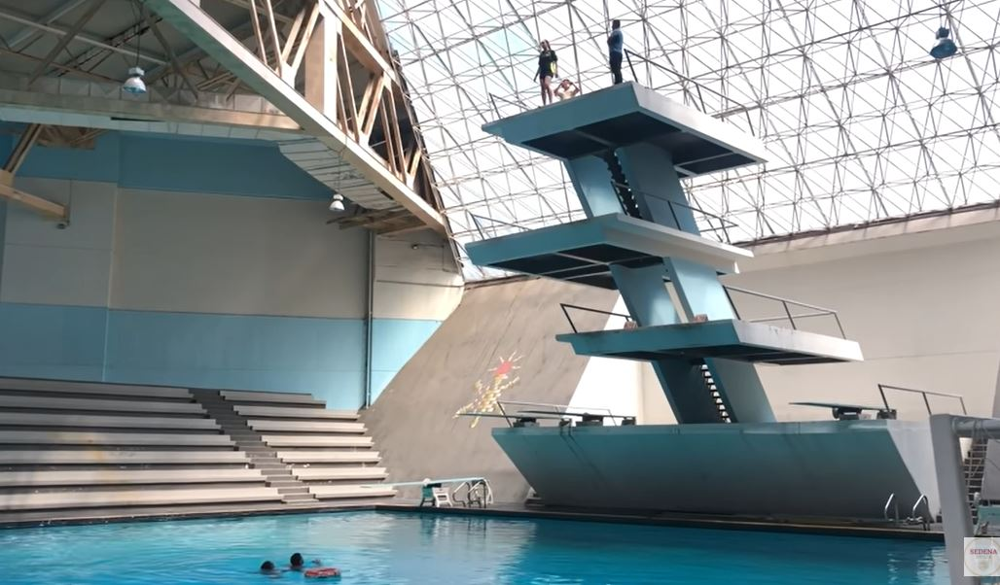
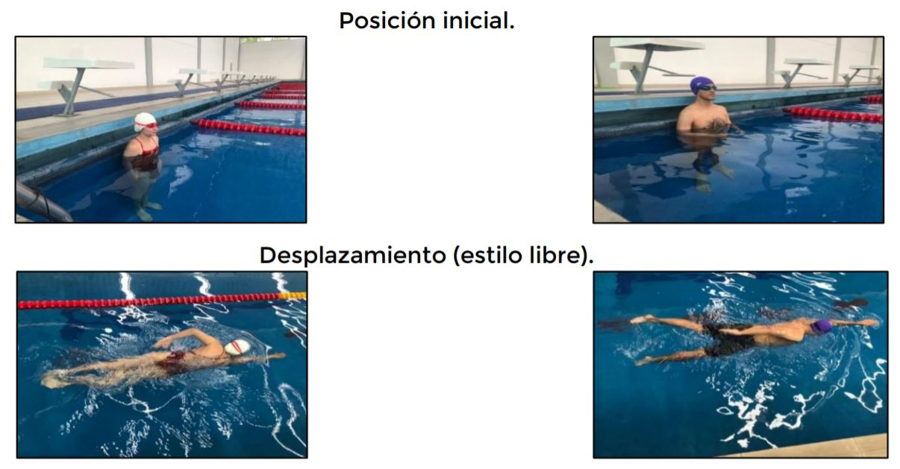

1. Examen de somatometría
2. Examen físico.
3. Examen cultural, psicométrico y psicológico.
4. Examen médico integral.
Examen de somatometría
Una vez realizado el registro en linea se dispondran 96 horas para presentarse en el centro de examen más cercano, donde se realizara una valoración
médica, que consiste en toma de peso y talla.
Examen físico
Consiste en 9 pruebas, que se dividen en 7 terrestres y 2 acuáticas.
PRUEBAS TERRESTRES
* Lagartijas:Los aspirantes deberán hacer repeticiones de lagartijas. La manera correcta de hacerlo es iniciar haciendo una flexión de codos bajando el pecho sin tocar el piso, manteniendo la espalda, glúteos y tobillos en linea recta, después se extienden los brazos para regresar la posición inicial.
Los hombres deben de hacer mínimo 11 repeticiones para empezar a sumar puntos.
Las mujeres deben de hacer mínimo 1 repetición para empezar a sumar puntos.

Las lagartijas deben de hacerse de manera continua y sin descanso.
En está prueba los aspirantes deberán hacer repeticiones de abdominales continuas. El evaluador lo apoyará colocando sus pies en los del concursante para brindar soporte.
* Abdominales: Los hombres deben de hacer 17 abdominales para empezar a sumar puntos.
Las mujeres deben de hacer 7 abdominales para empezar a sumar puntos.

Los aspirantes deben lograr mantener el equilibrio sobre una pierna. Pero el tronco y los brazos colocan de forma horizontal hasta quedar una línea
recta entre citadas extremidades. A esta posición se le llama arabesque.
* Arabesque: Los hombres y mujeres deben de durar mínimo 11 segundos en esa posición para empezar a sumar puntos.

* Resistencia: Los hombres deberán correr una distancia de 1.2 km en menos de 7:30 minutos.
Y las mujeres deben de correr en menos de 9:30 minutos

El aspirante deberá colocar sus brazos rectos y luego bajar el cuerpo hasta que las rodillas tenga un ángulo de 90°. A continuación, se realiza un
salto vertical, extendiendo las rodillas, tobillos, hombros y codos, al momento de caer, se regresa a la posición de inicio (sentadilla), para repetir el ejercicio.
* Sentadillas: Los hombres y mujeres deben de haceer mínimo 11 repeticiones para empezar a sumar puntos.

La posición inicial es de pie, con las piernas juntas y extendidas con las puntas de los pies a la orilla de un cajón. A continuación, se flexionará
el tronco hacia el frente; manteniendo las piernas extendidas y sin flexionar las rodillas.
Se llevarán las palmas de las manos sobre puestas con los dedos extendidos, alineadas hacia abajo hasta rebasar el borde superior del cajón y sin hacer movimiento de
resorte.
* Flexibilidad: Los hombres y mujeres deben de llegar al menos 2 centímetros por abajo de los pies.

Se inicia de la posición en cunclillas, se colocan las manos en el suelo y se mantiene la cabeza erguida.
Después se desplazan las piernas hacia atrás con los pies juntos y se hace una flexión de brazos (lagartija), manteniendo la espalda, glúteos y tobillos en línea recta.
A continuación, mediante un brinco se recogen las piernas para volver a la posición inicial.
Por último, desde la posición inicial se levanta todo el cuerpo de un salto vertical elevando las manos y aterrizar de la manera más suave posible.
Después vuelve a la posición de cuclillas para repetir el ejercicio.
* Burpees: Los hombres deben de hacer 6 repeticiones para empezar a sumar puntos.
Las mujeres deben de hacer 1 repetición para empezar a sumar puntos.

PRUEBAS ACUÁTICAS
* Prueba de decisión: El personal deberá saltar desde una plataforma de 5 metros de altura. Es una de las pruebas más importantes, ya que si el personal masculino y femenino no la realizan, quedarán
automáticamente excluido y no podrá volver a participar al plantel en ese mismo año.

* Prueba de desplazamiento: El personal debe ingresar a la alberca en el carril que se le indique, estando de pie, apoyando su
espalda a la pared, a la señal de un silbatazo realizará el desplazamiento, hasta completar una distancia mínima de 15 metros.
Es otra de las pruebas más importantes, el nadar menos de 15 metros es motivo de exclusión.

Examen cultural, psicométrico y psicológico
El objetivo del examen cultural es evaluar el conocimiento de los cadetes en áreas como la historia, literatura, artes, filosofía y la ciencia, entre otras.
El temario para el examen puede variar dependiendo de la carrera.
El examen psicométrico y psicológico no tienen temarios, ya que es un examen para evaluar al aspirante si cubre el perfil de un cadete.
Examen médico integral
somatometría (peso y talla)
Toma de signos vitales
Agudeza visual
Revisión de oídos, nariz, garganta
Prueba cardiopulmonar, abdominal, músculo esquelético y estado odontológico
Los aspirantes se presentarán y entregarán en el centro de examen preferentemente donde inciaron sus trámites, con fecha de expedición no mayor a 10 días anteriores a citado examen, lo siguiente:
1- Placa de rayos X posteroanterior de tórax (PA o de frente), con nombre y fecha impresos.
2- Biometría hemática.
3- Examen general de orina.
4- Química sanguínea (únicamente glucosa, urea y creatinina).
5- Antígeno de superficie del virus de la hepatitis B (HBsAg)
6- Anticuerpos totales contra el virus de hepatitis C.
7- Estudio de hormona folículo estimulante (mujeres).

Correo electrónico
TODA ESTA INFORMACIÓN FUE OBTENIDA DE LA PÁGINA OFICIAL DEL GOBIERNO DE MÉXICO.